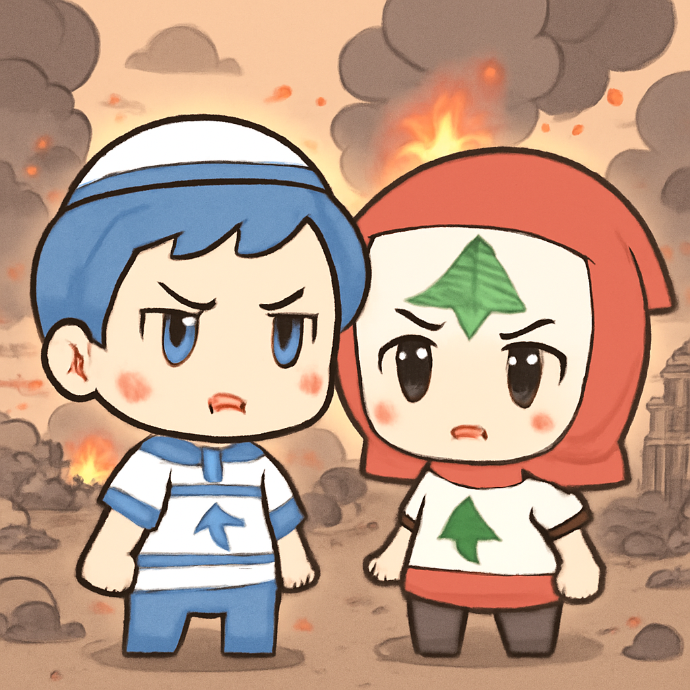

其一 · 委內瑞拉 · 地震造成920人喪生
委內瑞拉雙震後，國際救援隊已抵達
在委內瑞拉，最近發生的雙重地震已造成920人喪生，許多人仍被困在瓦礫下。國際救援隊正在全力以赴，希望能在時間的賽跑中找到更多的生還者。這場災難讓全球關注這個國家的重建問題，未來的援助和支持將成為關鍵。希望能早日傳來好消息！
🔗 原始新聞 ↗
2026-06-28 · 以古觀今，以笑抗愁
委內瑞拉雙震後，國際救援隊已抵達
在委內瑞拉，最近發生的雙重地震已造成920人喪生，許多人仍被困在瓦礫下。國際救援隊正在全力以赴，希望能在時間的賽跑中找到更多的生還者。這場災難讓全球關注這個國家的重建問題，未來的援助和支持將成為關鍵。希望能早日傳來好消息！
🔗 原始新聞 ↗
美國對伊朗的空襲引發更大衝突
美國在中東的軍事行動再度升級，因為美國軍隊對伊朗的空襲進行報復。這是美國和伊朗近期緊張局勢的延續，恐怕會影響到整個地區的安全局勢。兩國之間的對抗讓人不禁想問：這場鬧劇何時才能結束？
🔗 原始新聞 ↗
以色列與黎巴嫩簽協議後發生衝突

以色列最近對黎巴嫩南部發動空襲，造成至少一人死亡，此事發生在兩國簽署框架協議後不久。這場衝突再度顯示出中東地區緊張局勢的脆弱性，未來的和平進程恐怕要面臨更多挑戰。希望雙方能冷靜下來，別讓火藥味再升級。
🔗 原始新聞 ↗
歐洲正經歷史無前例的熱浪
德國、丹麥和捷克等國正遭受前所未有的熱浪襲擊，約有1.5億人面對35度以上的高溫，讓不少人開始懷念空調的存在。這波熱浪不僅影響了人們的生活，也引發了對氣候變遷的更深思考。希望大家能保持清涼，別讓這個夏天變成一場火鍋盛宴。
🔗 原始新聞 ↗
澳洲政府嚴管社交媒體保護青少年
澳洲政府宣布將加強社交媒體對16歲以下兒童的管制，因為他們認為科技公司實在太隨意了。這項措施可能會對科技巨頭造成影響，也顯示出政府對年輕人上網安全的重視。未來，青少年們的網路生活或許會變得更加規範，真是讓人期待又有點緊張。
🔗 原始新聞 ↗